CS180 Project 4
Image Warping and Mosaicing
My attempt at straightening out perspective and stitching overlapping photographs into a wider view.
Overview
Putting the Pieces Together
My attempt at straightening out perspective and turning a few overlapping photographs into a wider view. Project 4A starts with manually selected correspondences, uses them to recover a homography, and then warps and blends the images together.
I use three pairs of photographs for the mosaics: the mailroom, I-House, and the statue and stairs. For rectification, I use a Kyogre card and an illustrated print. I also try a cylindrical projection on the mailroom pair.
Click any image to open the original photograph or full-resolution export. The matrices and equations describe the method.
Project 4A
Image Warping and Mosaicing
The pipeline is: select matching points → estimate the homography → inverse-warp the images → blend them on a shared canvas. I implement the homography solver, nearest neighbor sampler, bilinear sampler, and feather blending in the notebook.
Project 4A · A.1
Shoot and Digitize Pictures
I use two overlapping photographs for each scene. In every pair, the image on the right is the reference, and I map the left image into its coordinates. Before selecting points, I apply the image orientation and resize each photograph so that its longest side is at most 1400 pixels. The mosaic inputs are 1400 × 1050.
The shared details give me landmarks to match: the mailboxes and signs in the mailroom, windows on the I-House facade, and corners around the statue and steps. The projective model assumes that the camera rotates around approximately the same center, or that the matched scene is approximately planar.
Mailroom
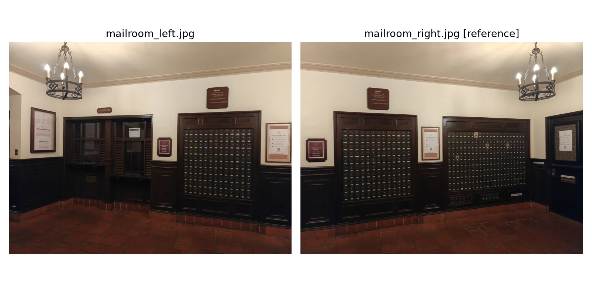
I-House
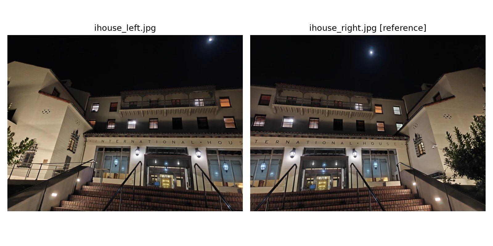
Statue and stairs
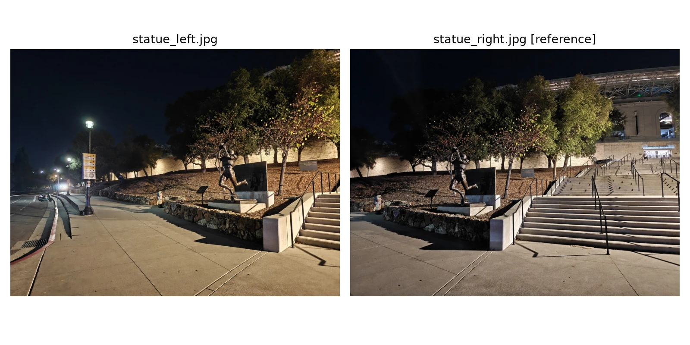
Project 4A · A.2
Recover Homographies
A homography maps a point (x, y) in the source image to (u, v) in the reference image. It has eight unknowns after fixing the bottom-right entry to 1. Each point pair gives me two equations, so four pairs are the minimum. I select 12 pairs per scene, giving an overdetermined system with 24 equations and 8 unknowns.
Rearranging gives the following two rows of A for each correspondence. I stack these rows for all 12 matches and solve Ah ≈ b using least squares.
| x | y | 1 | 0 | 0 | 0 | −ux | −uy |
| 0 | 0 | 0 | x | y | 1 | −vx | −vy |
For numerical stability, I center each point set and scale its mean distance from the origin to √2 before fitting. After solving the normalized system, I undo the normalization with H = Tdst⁻¹ Hn Tsrc, then rescale so that h₃₃ = 1. The tables below show the original pixel-coordinate systems for readability.
I measure reprojection error by transforming each source point and taking its Euclidean distance from the clicked reference point. These are fitting errors on the selected matches, rather than errors measured on new points.
Mailroom: correspondences and recovered H
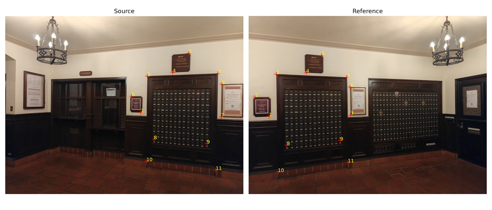
| 3.7627368 | 0.0909535 | -2745.4894 |
| 0.9419703 | 3.0229831 | -956.3895 |
| 0.0019492 | 0.0000068 | 1.0000000 |
Mean reprojection error: 0.532 px. Maximum error: 1.386 px, in the resized reference image.
View the full 24 × 8 pixel-coordinate system
Each pair of rows comes from one match. The last column is b; displayed values are rounded to four decimal places. The fitting itself uses normalized coordinates.
| Row | h₁₁ | h₁₂ | h₁₃ | h₂₁ | h₂₂ | h₂₃ | h₃₁ | h₃₂ | b |
|---|---|---|---|---|---|---|---|---|---|
| 1 | 741.9117 | 472.5913 | 1.0000 | 0.0000 | 0.0000 | 0.0000 | -27012.5587 | -17206.7633 | 36.4094 |
| 2 | 0.0000 | 0.0000 | 0.0000 | 741.9117 | 472.5913 | 1.0000 | -354497.1639 | -225811.5882 | 477.8158 |
| 3 | 795.8855 | 568.0833 | 1.0000 | 0.0000 | 0.0000 | 0.0000 | -94789.5319 | -67658.4189 | 119.0995 |
| 4 | 0.0000 | 0.0000 | 0.0000 | 795.8855 | 568.0833 | 1.0000 | -470777.9467 | -336029.6321 | 591.5147 |
| 5 | 835.0298 | 353.6419 | 1.0000 | 0.0000 | 0.0000 | 0.0000 | -135951.9416 | -57576.7519 | 162.8109 |
| 6 | 0.0000 | 0.0000 | 0.0000 | 835.0298 | 353.6419 | 1.0000 | -285656.1176 | -120977.6867 | 342.0909 |
| 7 | 1249.1184 | 338.1227 | 1.0000 | 0.0000 | 0.0000 | 0.0000 | -721213.9862 | -195224.7230 | 577.3784 |
| 8 | 0.0000 | 0.0000 | 0.0000 | 1249.1184 | 338.1227 | 1.0000 | -451018.2585 | -122085.7003 | 361.0693 |
| 9 | 984.1851 | 331.8644 | 1.0000 | 0.0000 | 0.0000 | 0.0000 | -332604.4173 | -112153.2528 | 337.9490 |
| 10 | 0.0000 | 0.0000 | 0.0000 | 984.1851 | 331.8644 | 1.0000 | -328085.5255 | -110629.4954 | 333.3575 |
| 11 | 1079.1022 | 219.2156 | 1.0000 | 0.0000 | 0.0000 | 0.0000 | -463962.1224 | -94252.1860 | 429.9520 |
| 12 | 0.0000 | 0.0000 | 0.0000 | 1079.1022 | 219.2156 | 1.0000 | -250877.0364 | -50964.7403 | 232.4868 |
| 13 | 1272.2866 | 401.7484 | 1.0000 | 0.0000 | 0.0000 | 0.0000 | -759152.4318 | -239716.6180 | 596.6835 |
| 14 | 0.0000 | 0.0000 | 0.0000 | 1272.2866 | 401.7484 | 1.0000 | -532816.9022 | -168246.9296 | 418.7868 |
| 15 | 1269.1575 | 593.6685 | 1.0000 | 0.0000 | 0.0000 | 0.0000 | -760543.0819 | -355756.0757 | 599.2504 |
| 16 | 0.0000 | 0.0000 | 0.0000 | 1269.1575 | 593.6685 | 1.0000 | -742174.4380 | -347163.8514 | 584.7773 |
| 17 | 873.7176 | 726.5654 | 1.0000 | 0.0000 | 0.0000 | 0.0000 | -196271.9839 | -163215.6919 | 224.6401 |
| 18 | 0.0000 | 0.0000 | 0.0000 | 873.7176 | 726.5654 | 1.0000 | -665565.2533 | -553470.1955 | 761.7624 |
| 19 | 1184.6850 | 751.5336 | 1.0000 | 0.0000 | 0.0000 | 0.0000 | -636868.7604 | -404013.0744 | 537.5849 |
| 20 | 0.0000 | 0.0000 | 0.0000 | 1184.6850 | 751.5336 | 1.0000 | -869907.0104 | -551846.5146 | 734.2939 |
| 21 | 829.2194 | 856.2016 | 1.0000 | 0.0000 | 0.0000 | 0.0000 | -142094.2948 | -146717.9416 | 171.3591 |
| 22 | 0.0000 | 0.0000 | 0.0000 | 829.2194 | 856.2016 | 1.0000 | -763075.4515 | -787905.3815 | 920.2335 |
| 23 | 1236.7105 | 907.6688 | 1.0000 | 0.0000 | 0.0000 | 0.0000 | -720627.7731 | -528896.1198 | 582.6972 |
| 24 | 0.0000 | 0.0000 | 0.0000 | 1236.7105 | 907.6688 | 1.0000 | -1067827.9450 | -783719.5259 | 863.4421 |
I-House: correspondences and recovered H
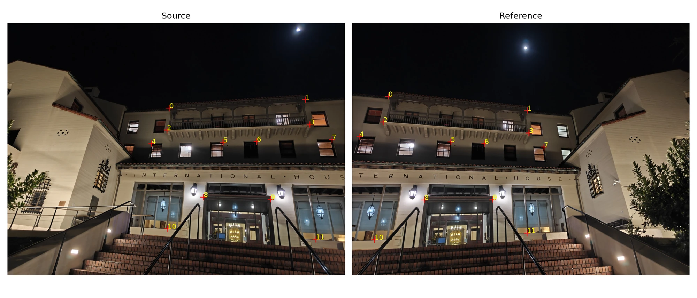
| 2.4319949 | -0.1631124 | -1323.6078 |
| 0.6699310 | 1.9397790 | -627.1018 |
| 0.0010202 | -0.0000461 | 1.0000000 |
Mean reprojection error: 0.704 px. Maximum error: 1.786 px, in the resized reference image.
View the full 24 × 8 pixel-coordinate system
Each pair of rows comes from one match. The last column is b; displayed values are rounded to four decimal places. The fitting itself uses normalized coordinates.
| Row | h₁₁ | h₁₂ | h₁₃ | h₂₁ | h₂₂ | h₂₃ | h₃₁ | h₃₂ | b |
|---|---|---|---|---|---|---|---|---|---|
| 1 | 671.3616 | 354.8029 | 1.0000 | 0.0000 | 0.0000 | 0.0000 | -100539.0528 | -53133.1323 | 149.7539 |
| 2 | 0.0000 | 0.0000 | 0.0000 | 671.3616 | 354.8029 | 1.0000 | -205764.6480 | -108743.0204 | 306.4885 |
| 3 | 1237.2010 | 318.8994 | 1.0000 | 0.0000 | 0.0000 | 0.0000 | -899429.1015 | -231835.7354 | 726.9870 |
| 4 | 0.0000 | 0.0000 | 0.0000 | 1237.2010 | 318.8994 | 1.0000 | -451353.5975 | -116340.3463 | 364.8183 |
| 5 | 661.6417 | 446.1766 | 1.0000 | 0.0000 | 0.0000 | 0.0000 | -85261.7304 | -57496.0599 | 128.8639 |
| 6 | 0.0000 | 0.0000 | 0.0000 | 661.6417 | 446.1766 | 1.0000 | -272661.8388 | -183868.9098 | 412.0990 |
| 7 | 1255.2679 | 422.6068 | 1.0000 | 0.0000 | 0.0000 | 0.0000 | -920578.7698 | -309928.1199 | 733.3723 |
| 8 | 0.0000 | 0.0000 | 0.0000 | 1255.2679 | 422.6068 | 1.0000 | -574589.2249 | -193444.9979 | 457.7423 |
| 9 | 597.8294 | 502.6724 | 1.0000 | 0.0000 | 0.0000 | 0.0000 | -18023.6458 | -15154.8069 | 30.1485 |
| 10 | 0.0000 | 0.0000 | 0.0000 | 597.8294 | 502.6724 | 1.0000 | -282560.9737 | -237585.5050 | 472.6449 |
| 11 | 894.8042 | 496.8718 | 1.0000 | 0.0000 | 0.0000 | 0.0000 | -365534.6247 | -202976.0982 | 408.5080 |
| 12 | 0.0000 | 0.0000 | 0.0000 | 894.8042 | 496.8718 | 1.0000 | -443001.7235 | -245992.4594 | 495.0823 |
| 13 | 1034.5721 | 493.7280 | 1.0000 | 0.0000 | 0.0000 | 0.0000 | -567576.9515 | -270864.2652 | 548.6103 |
| 14 | 0.0000 | 0.0000 | 0.0000 | 1034.5721 | 493.7280 | 1.0000 | -520201.1930 | -248255.1723 | 502.8177 |
| 15 | 1346.2683 | 485.6536 | 1.0000 | 0.0000 | 0.0000 | 0.0000 | -1071155.6774 | -386409.2836 | 795.6480 |
| 16 | 0.0000 | 0.0000 | 0.0000 | 1346.2683 | 485.6536 | 1.0000 | -696133.4543 | -251123.5622 | 517.0837 |
| 17 | 813.6120 | 724.6993 | 1.0000 | 0.0000 | 0.0000 | 0.0000 | -243119.6150 | -216551.1378 | 298.8152 |
| 18 | 0.0000 | 0.0000 | 0.0000 | 813.6120 | 724.6993 | 1.0000 | -599024.6747 | -533562.3573 | 736.2534 |
| 19 | 1091.7964 | 734.2839 | 1.0000 | 0.0000 | 0.0000 | 0.0000 | -636095.9016 | -427804.0915 | 582.6140 |
| 20 | 0.0000 | 0.0000 | 0.0000 | 1091.7964 | 734.2839 | 1.0000 | -802790.2604 | -539913.8041 | 735.2930 |
| 21 | 664.1466 | 856.1433 | 1.0000 | 0.0000 | 0.0000 | 0.0000 | -61501.3348 | -79280.6168 | 92.6020 |
| 22 | 0.0000 | 0.0000 | 0.0000 | 664.1466 | 856.1433 | 1.0000 | -599021.2946 | -772191.0086 | 901.9414 |
| 23 | 1279.3852 | 900.6544 | 1.0000 | 0.0000 | 0.0000 | 0.0000 | -927261.3153 | -652768.2484 | 724.7710 |
| 24 | 0.0000 | 0.0000 | 0.0000 | 1279.3852 | 900.6544 | 1.0000 | -1118066.6499 | -787090.3235 | 873.9093 |
Statue and stairs: correspondences and recovered H
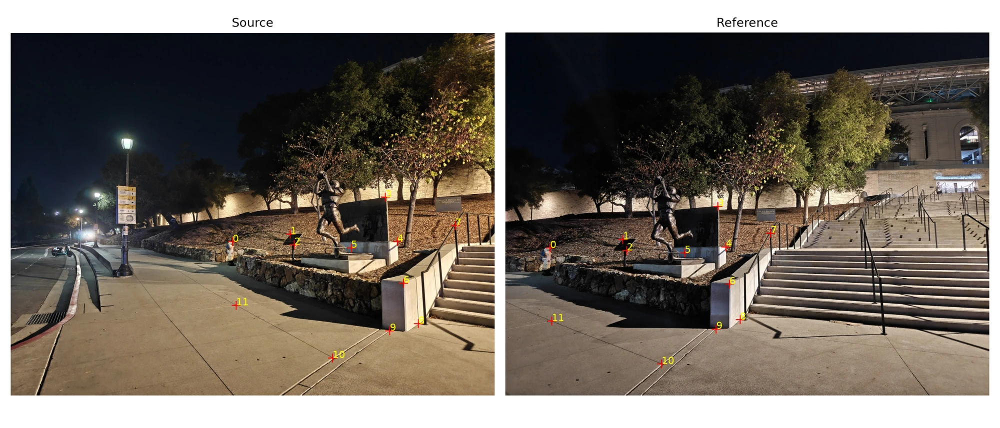
| 2.2703194 | -0.1084627 | -1185.9304 |
| 0.5771106 | 1.7968726 | -480.7309 |
| 0.0009401 | -0.0000537 | 1.0000000 |
Mean reprojection error: 0.704 px. Maximum error: 1.688 px, in the resized reference image.
View the full 24 × 8 pixel-coordinate system
Each pair of rows comes from one match. The last column is b; displayed values are rounded to four decimal places. The fitting itself uses normalized coordinates.
| Row | h₁₁ | h₁₂ | h₁₃ | h₂₁ | h₂₂ | h₂₃ | h₃₁ | h₃₂ | b |
|---|---|---|---|---|---|---|---|---|---|
| 1 | 641.6103 | 605.1147 | 1.0000 | 0.0000 | 0.0000 | 0.0000 | -82836.3908 | -78124.5543 | 129.1070 |
| 2 | 0.0000 | 0.0000 | 0.0000 | 641.6103 | 605.1147 | 1.0000 | -399573.3998 | -376845.1699 | 622.7665 |
| 3 | 808.6037 | 583.2480 | 1.0000 | 0.0000 | 0.0000 | 0.0000 | -274695.7543 | -198138.7554 | 339.7162 |
| 4 | 0.0000 | 0.0000 | 0.0000 | 808.6037 | 583.2480 | 1.0000 | -483459.1508 | -348720.3311 | 597.8938 |
| 5 | 820.0285 | 613.3342 | 1.0000 | 0.0000 | 0.0000 | 0.0000 | -287689.2209 | -215175.0290 | 350.8283 |
| 6 | 0.0000 | 0.0000 | 0.0000 | 820.0285 | 613.3342 | 1.0000 | -516532.1603 | -386336.4162 | 629.8954 |
| 7 | 1083.5549 | 475.8241 | 1.0000 | 0.0000 | 0.0000 | 0.0000 | -665328.3508 | -292167.2725 | 614.0237 |
| 8 | 0.0000 | 0.0000 | 0.0000 | 1083.5549 | 475.8241 | 1.0000 | -544194.9391 | -238973.6600 | 502.2311 |
| 9 | 1117.5642 | 604.8858 | 1.0000 | 0.0000 | 0.0000 | 0.0000 | -712107.5604 | -385430.8348 | 637.1961 |
| 10 | 0.0000 | 0.0000 | 0.0000 | 1117.5642 | 604.8858 | 1.0000 | -692289.8435 | -374704.4227 | 619.4631 |
| 11 | 984.3216 | 622.1863 | 1.0000 | 0.0000 | 0.0000 | 0.0000 | -510101.3480 | -322433.2931 | 518.2263 |
| 12 | 0.0000 | 0.0000 | 0.0000 | 984.3216 | 622.1863 | 1.0000 | -626915.3175 | -396270.9982 | 636.9009 |
| 13 | 1135.4637 | 724.4360 | 1.0000 | 0.0000 | 0.0000 | 0.0000 | -735547.8811 | -469286.1242 | 647.7952 |
| 14 | 0.0000 | 0.0000 | 0.0000 | 1135.4637 | 724.4360 | 1.0000 | -826351.4305 | -527219.6005 | 727.7656 |
| 15 | 1285.6529 | 558.3575 | 1.0000 | 0.0000 | 0.0000 | 0.0000 | -986195.3232 | -428303.4032 | 767.0774 |
| 16 | 0.0000 | 0.0000 | 0.0000 | 1285.6529 | 558.3575 | 1.0000 | -745676.3841 | -323846.3269 | 579.9982 |
| 17 | 1179.0849 | 842.0492 | 1.0000 | 0.0000 | 0.0000 | 0.0000 | -799825.0370 | -571198.9185 | 678.3439 |
| 18 | 0.0000 | 0.0000 | 0.0000 | 1179.0849 | 842.0492 | 1.0000 | -979370.4678 | -699422.1562 | 830.6191 |
| 19 | 1096.5138 | 862.5086 | 1.0000 | 0.0000 | 0.0000 | 0.0000 | -668549.6269 | -525875.5494 | 609.7047 |
| 20 | 0.0000 | 0.0000 | 0.0000 | 1096.5138 | 862.5086 | 1.0000 | -940057.3885 | -739441.2858 | 857.3147 |
| 21 | 930.7674 | 941.5759 | 1.0000 | 0.0000 | 0.0000 | 0.0000 | -420601.3275 | -425485.5305 | 451.8866 |
| 22 | 0.0000 | 0.0000 | 0.0000 | 930.7674 | 941.5759 | 1.0000 | -892541.6310 | -902906.2071 | 958.9309 |
| 23 | 651.9147 | 788.8694 | 1.0000 | 0.0000 | 0.0000 | 0.0000 | -87245.2223 | -105573.7732 | 133.8292 |
| 24 | 0.0000 | 0.0000 | 0.0000 | 651.9147 | 788.8694 | 1.0000 | -544258.5163 | -658596.8107 | 834.8616 |
All three mean fitting errors are below one pixel. This suggests that the selected landmarks are fitted closely, but it does not guarantee that every part of the scene will align. Objects at different depths and small camera translations can still produce parallax.
Project 4A · A.3
Warp and Rectify Images
I use inverse warping so that every output pixel asks where it came from in the original image. I transform the image corners to determine the output bounds, then add a translation to move the canvas into nonnegative coordinates. For each destination pixel, I apply the inverse transform, divide by the homogeneous coordinate, and sample the source image.
Nearest neighbor rounds to the closest pixel center. Bilinear interpolation takes a weighted average of the four surrounding pixels. I track valid samples with a separate mask, so an uncovered pixel is different from a valid black pixel. At the image boundary, I clamp the neighboring indices to the last row or column.
For rectification, I click the four corners in top-left, top-right, bottom-right, bottom-left order. I map them to (0, 0), (W−1, 0), (W−1, H−1), and (0, H−1). Here the output canvas is the target rectangle itself, so no extra canvas translation is needed.
Kyogre card
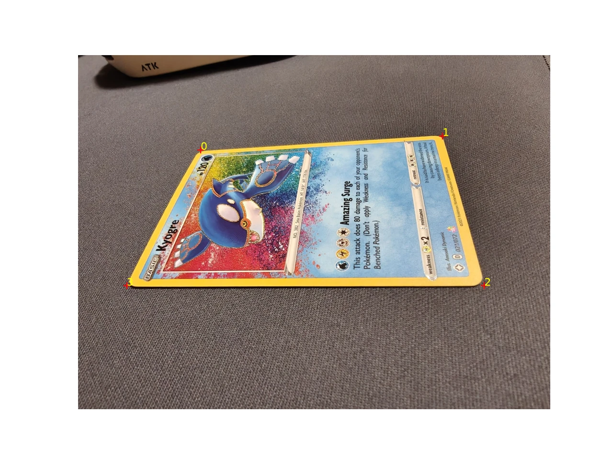
The configured target is 1056 × 756 pixels (width × height). The homography below maps the selected quadrilateral to that rectangle.
| 2.9233290 | 1.5928395 | -1507.2646 |
| 0.2831658 | 4.9200049 | -1481.2201 |
| 0.0003751 | 0.0021784 | 1.0000000 |
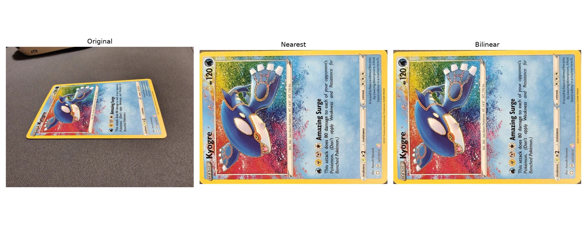
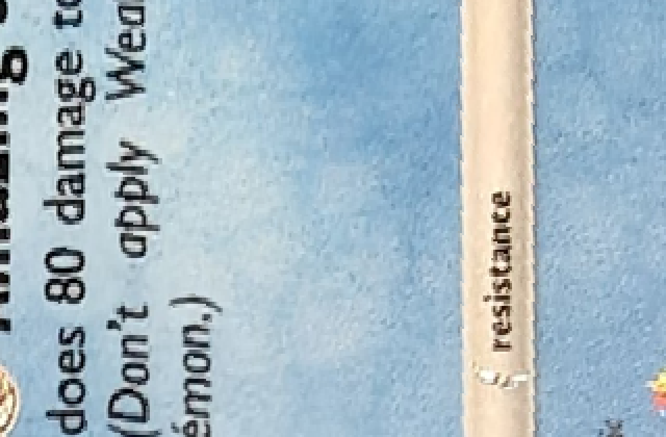
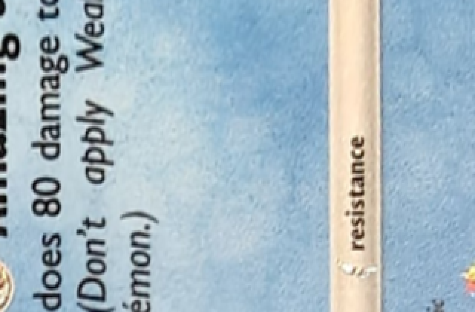
Illustrated print
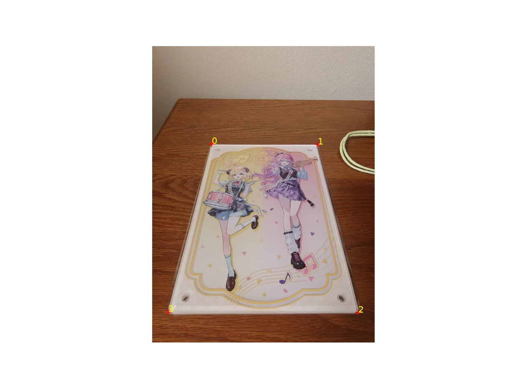
The configured target is 740 × 1050 pixels (width × height). The homography below maps the selected quadrilateral to that rectangle.
| 2.7155940 | 0.7048106 | -1087.2180 |
| -0.0264555 | 4.3651614 | -2003.2127 |
| -0.0000174 | 0.0018415 | 1.0000000 |
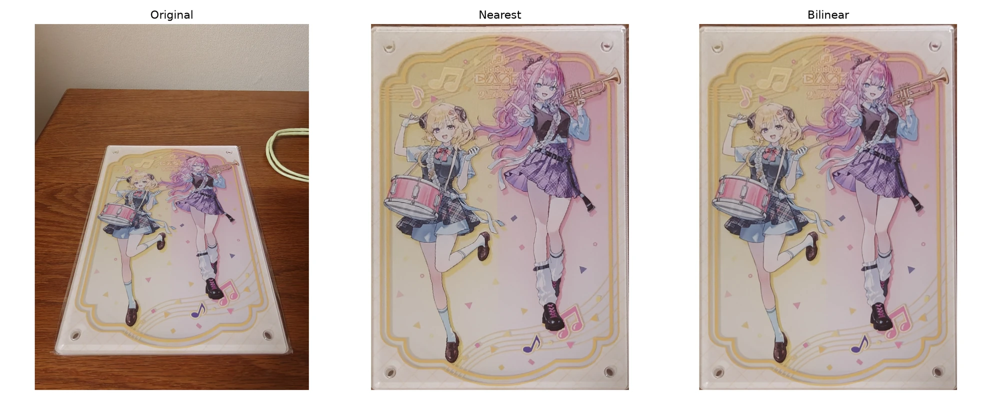
Both methods make the selected edges rectangular. At the scale of the whole image, their results look quite similar. In the enlarged details, nearest neighbor has more stepped edges around the card text and illustration outlines. Bilinear is smoother, although it also softens some fine detail. Neither method can recover detail that was missing from the original photograph.
Speed and quality
| Example | Nearest neighbor | Bilinear | Bilinear / nearest |
|---|---|---|---|
| Kyogre card | 0.1128 s | 0.2850 s | 2.53× |
| Illustrated print | 0.1191 s | 0.3131 s | 2.63× |
These are the saved median times over three runs, after one warm-up, at the target sizes above. Bilinear takes about 2.5–2.6 times as long in this implementation because it samples and combines four neighbors instead of one. I use it for the mosaics to make resampled edges smoother. These timings describe this run, rather than a general benchmark for every implementation.
Project 4A · A.4
Blend Images into a Mosaic
For each mosaic, I keep the right image as the reference and warp the left image into its projection. I transform the corners of both images to find a shared canvas, then apply the same canvas translation to both. I inverse-warp the RGB images and their feather weights using bilinear interpolation.
The weight is based on distance to the nearest image edge: it is largest toward the center and falls off toward the boundary. I keep the boundary weight positive so that pixels covered by only one image are still preserved. Invalid samples get zero weight. In the overlap, I add the weighted colors and divide by the sum of the weights.
This avoids abruptly replacing one photograph with the other. The transparent borders show where neither image covers the canvas; I leave them uncropped so that the shape of the warp is visible.
Mailroom
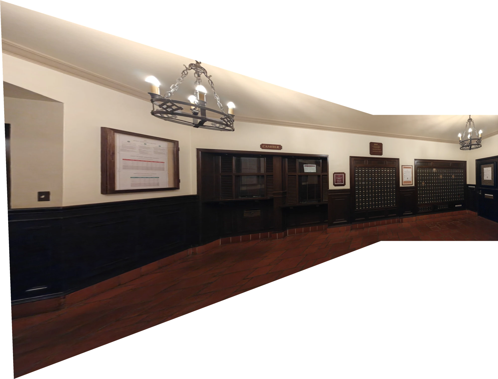
The mailbox grid and central signs join into a wider view without a hard cut through the overlap. The left part stretches noticeably because it is being projected into the right camera’s view. Feathering smooths the transition, but it does not remove that projective stretching.
I-House
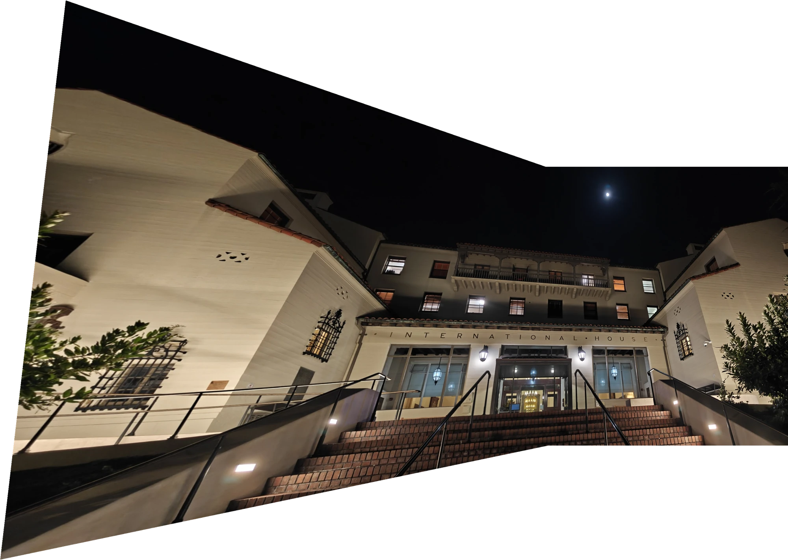
The facade and entrance line up into a continuous building, including the windows used for the correspondences. The left wall and railings become stretched toward the edge. The wide outline and sloping borders make the effect of the planar projection especially visible here.
Statue and stairs
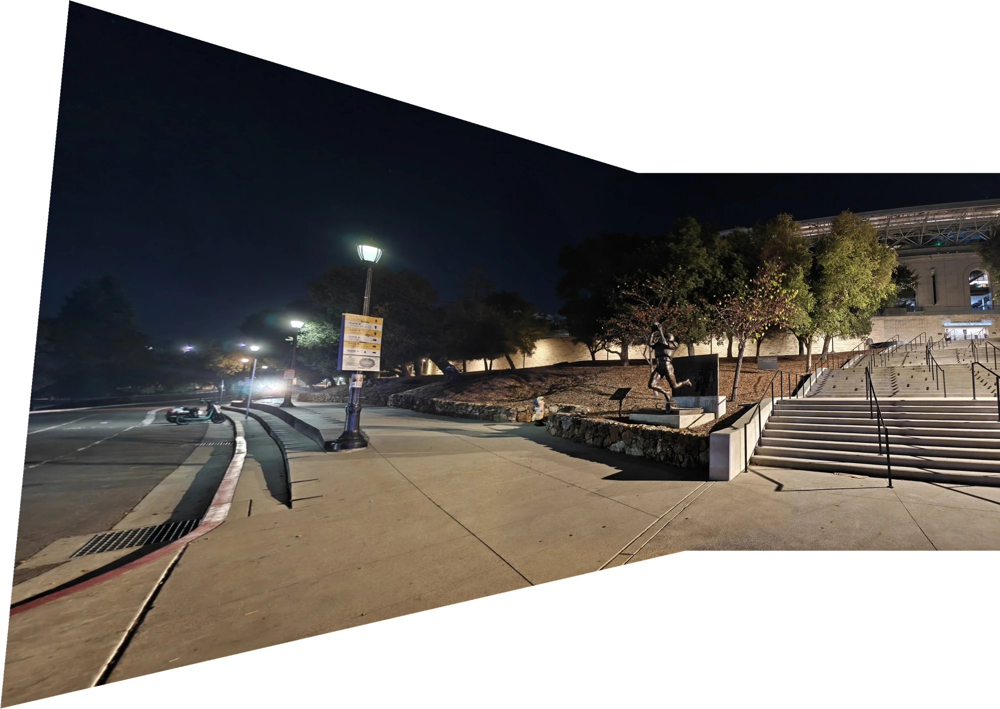
The result extends the view from the road on the left to the steps on the right. The statue, stone wall, and steps remain recognizable across the overlap. The near pavement and railings are useful places to inspect for residual misalignment, since one homography cannot compensate for depth differences if the camera center shifts.
Blending and alignment solve different problems. Feathering reduces visible boundaries, but if two features do not land in the same place, averaging can leave a blurred or doubled edge. More accurate correspondences can improve the fit; parallax may require a different scene model or capture setup.
Project 4A · A.5
Trying a Cylindrical Projection
As an extension, I project the mailroom images onto a cylinder instead of a plane. For each output pixel, I form a cylindrical ray, rotate it into each camera’s coordinates, and project it into the original photograph. I then use my bilinear sampler and the same feather blending. Sampling the originals directly avoids an extra image-resampling stage.
The saved effective focal lengths are 932.38 px and 944.17 px at 1400 × 1050 input resolution. The cylinder radius is their mean, 938.28 px. These are estimates from the 12 selected point pairs, rather than a physical camera calibration. The model assumes centered principal points, square pixels, and an approximately fixed camera center, without radial-distortion correction.
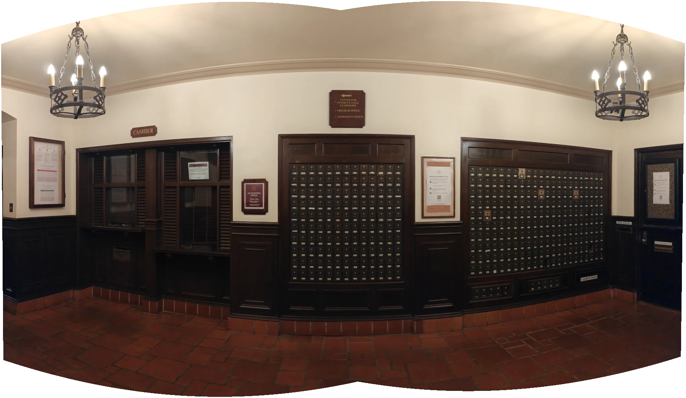
The cylindrical result spreads the room more evenly across the frame and reduces the strong enlargement of the left side in the planar version. The ceiling and floor boundaries curve instead. Changing the projection changes how the wider view is represented; it does not make every line straight or remove all possible alignment errors.